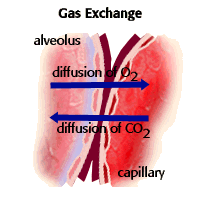

Lung Toxicology Problem Set
Problem 3: Lung function
For help to answer the question:
One of the primary functions of the alveoli is to create a large surface area in the lungs. Why is a large surface are so important?
A. for energy storage B. to remove toxins from the blood C. to store oxygen for future use D. for gas exchange E. for the Krebs cycle
Tutorial
| The primary function of the lung is gas exchange. The alveoli allow this gas exchange to occur. Each alveoli has a network of capillaries that carry oxygen-poor red blood cells. The capillaries bring the red blood cells very close to the air space in the alveoli. The air in the alveoli is oxygen rich. Oxygen moves from the alveolar space into the red blood cell by diffusion. This can happen very quickly because the surface are of the alveoli is large and the membranes separating the lungs from the red blood cells are very thin. The rate of oxygen diffusion is dependent on surface area, so gas exchange occurs more quickly with larger surface areas. |  |
An analogy
| Why does more, smaller alveoli mean more surface area? Image a box that measures 1 meter on each side. The total surface area inside the box is 6 square meters. Now take same amount of space (1 cubic meter) and divide it into 100,000 little cubes that are 1 centimeter on each side. The surface are on the inside of all those little cubes is 600 square meters. This is what your lungs are like. They are divided into many smaller spaces, the alveoli, and that give them a very large surface area inside. |


The Biology Project
The University of Arizona
Tuesday, October 14, 1997
Contact the Development Team
http://biology.arizona.edu
All contents copyright © 1997. All rights reserved.